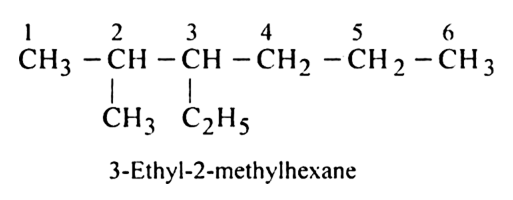
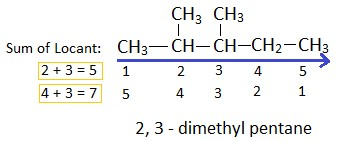

CARBON AND IT'S COMPOUNDS
Introduction
The branch of chemistry which deals with carbon compounds (except oxides , metallic carbides, carbonates & bicarbonates) is called Organic Chemistry.
1) Can form large number of compounds with other elements.
2) Properties of these compounds are different than those of inorganic compounds.
Reason for Versatile nature of Carbon :
1. Tetravalency – It has four valence electrons and thus can form covalent bonds by sharing these valence electrons2. Catenation – can join together with other carbon atoms to form chain , branched chain or ring compounds
3. Formation of multiple bonds with other carbon atoms - It can combine with other carbon atom by single , double or triple bond formation
4. ISOMERISM – they can make isomers – compounds with same molecular formula but different structural formula.
Covalent Bonding In Carbon Compounds
Atomic number of Carbon is 6
Electronic configuration is 2 , 4
It has 4 valence electrons in its outermost shell and can form 4 covalent bonds with these.
It can form
- Single Bond - with only one electron is shared by both the atoms
- Double Bond – when both carbon atoms share two electrons each.
- Triple Bond – when both carbon atoms share three electrons each.
On the basis of number of bonds present between two carbon atoms , carbon compounds are classified as Saturated and Unsaturated.
- Saturated Carbon Compounds – when there are only single bonds between the carbon atoms
- Unsaturated Carbon Compounds - when multiple bonds (double or triple bonds) occurs between carbon atoms.
Homologous Series
It is a series of organic ( carbon ) compounds with same functional group and similar chemical properties( due to similar structure) , that differ from each other by one methylene (- CH2 ) group.Example – Members of alkane series
- Methane CH4),
- Ethane C2H6 (Can also be written as CH4- CH2)
- Propane C3H8 or (CH4-CH2-CH2)
Characteristics :
- They have same general formula
- Two consecutive homologous differ by – CH2 group
- Difference in molecular mass between two consecutive homologous is 14 ( C= 12 + H = 2x1 )
- Show similar physical properties with gradual change
- Chemical properties are same .
Alkenes - CnH2n
Alkyne - CnH2n-2
Naming Of Carbon Compounds (IUPAC Nomenclature)
Every Name consists ofPrefix + Root word + suffix
Root word depends on number of Carbon atoms present in the main chain.
| No. Of C-Atoms | Root Word |
|---|---|
| 1 | Meth |
| 2 | Eth |
| 3 | Prop |
| 4 | But |
| 5 | Pent |
| 6 | Hex |
| 7 | Hept |
| 8 | Oct |
| 9 | Non |
| 10 | Dec |
Prefix – used before the root word . These indicate the presence of substituent alkyl or few functional groups and also their numbers.
The following table shows groups that appear as a prefix to the root
| Groups | Prefix |
|---|---|
| CnH(2n+1) | CnH(2n+1) |
| -Cl | Chloro |
| -Br | Bromo |
| -I | Iodo |
| -NO2 | Nitro |
| -NH2 | Amino |
In case there is more than one group of the same type attached to the carbon chain, this is indicated in the naming system by using a special prefix.
| Groups | Prefix |
|---|---|
| 2 | di- |
| 3 | Tri- |
| 4 | Tetra- |
| 5 | Penta- |
Primary Suffix – indicates bonding in the Carbon Chain.
For single bond suffix added is - ane
For Double bond - ene
For Triple bond - yne
Secondary Suffix – indicates the functional group.
Rules For Naming Carbon Compounds
- Longest Chain Rule -
The longest, continuous chain of Carbon atom is selected as parent hydrocarbon (Root word). - Lowest number Rule –
side –chain or substituent (functional groups) should get lowest number. This means start numbering from the end where side chain or substituent is closest. - Alphabetical –
In case substituents are of two or more types then, name of substituents are written in alphabetical order regardless of their position in chain.

- Prefix -
If the same substituent occurs more than once, the location of each point on which the substituent occurs is given. In addition, the number of times the substituent group occurs is indicated by a prefix (di, tri, tetra, etc.).

- If chains of equal length are competing for selection as the parent chain, then the choice goes in series to:
a) the chain which has the greatest number of side chains.
b) the chain whose substituents have the lowest- numbers.
c) the chain having the greatest number of carbon atoms in the smaller side chain.
d)the chain having the least branched side chains. - Suffix –
Primary Suffix – is decided by Carbon – Carbon bond
For single bond , suffix used is -ane eg. Meth + -ane= methane
For double bond , suffix used is -ene eg. Eth + -ene = ethane
For triple bond suffix used is -yne eg. Eth + -yne = ethyne
Secondary Suffix – is decided by the functional group